Wiki Oficial, Bestiario, Guía de Supervivencia y Mods (Forge 1.19.2)
Horror K es un modpack hardcore de supervivencia y terror psicológico diseñado sobre Minecraft Forge 1.19.2. El proyecto transforma por completo la experiencia de juego tradicional, convirtiendo el mundo en un entorno claustrofóbico, peligroso e impredecible.
A diferencia de los modpacks convencionales, Horror K combina múltiples entidades acechadoras (Dwellers), mecánicas de cordura, efectos visuales perturbadores, sonido posicional 3D y armamento militar moderno para darte una oportunidad de defensa.
Supervivencia táctica donde cada decisión puede ser la última:
Permanecer en la oscuridad, presenciar criaturas o escuchar ruidos extraños reducirá tu cordura. Al bajar demasiado, sufrirás alucinaciones visuales y auditivas que te confundirán.
Accede a un arsenal militar detallado mediante Timeless and Classics Zero. Personaliza fusiles, pistolas y escopetas con miras y accesorios para repeler los ataques de alto riesgo.
Escapa de las garras de las criaturas utilizando maniobras de parkour: deslizamientos, volteretas, escalada rápida de muros y saltos de evasión.
Integración completa con Simple Voice Chat. Comunícate en tiempo real con otros jugadores considerando la distancia y la acústica del entorno.
Construye refugios seguros con SecurityCraft: puertas reforzadas, escáneres y torres de defensa para mantener a raya las invasiones nocturnas.
Utiliza Sophisticated Backpacks para transportar munición, suministros médicos y herramientas esenciales sin perder movilidad.
Memoriza estas teclas clave para reaccionar al instante ante el ataque de un Dweller:
Guía de armamento militar esencial para neutralizar a las amenazas más agresivas del modpack:
Ideal contra: Cave Dweller y The Rake.
Entrega un enorme poder de parada a corta distancia. Un disparo certero en la cabeza frena embestidas directas dentro de cavernas estrechas.
Ideal contra: Hordas de Born in Chaos y Goatman.
Excelente cadencia de tiro y precisión a media distancia. Es la mejor opción para patrullar de noche y limpiar zonas abiertas.
Ideal contra: The Man From The Fog y The One Who Watches.
Te permite eliminar o ahuyentar a las entidades que te observan fijamente a larga distancia antes de que inicien la cacería.
Sigue estos pasos esenciales durante tus primeros minutos para garantizar tu supervivencia:
No explores de noche sin antorchas. La oscuridad destruye tu nivel de cordura rápidamente y atrae a The Midnight Lurker. Cierra la entrada de tu refugio con bloques sólidos.
Consigue cuero y hierro rápidamente para armar tu primera mochila de Sophisticated Backpacks. Busca pólvora para fabricar munición básica del mod TACZ.
Si la niebla se vuelve densa de repente, no corras a ciegas. The Man From The Fog suele rondar en estas condiciones. Quédate cerca de una pared y recarga tu arma.
Informe documentado de las abominaciones que acechan en el modpack (Haz clic en una imagen para agrandarla):
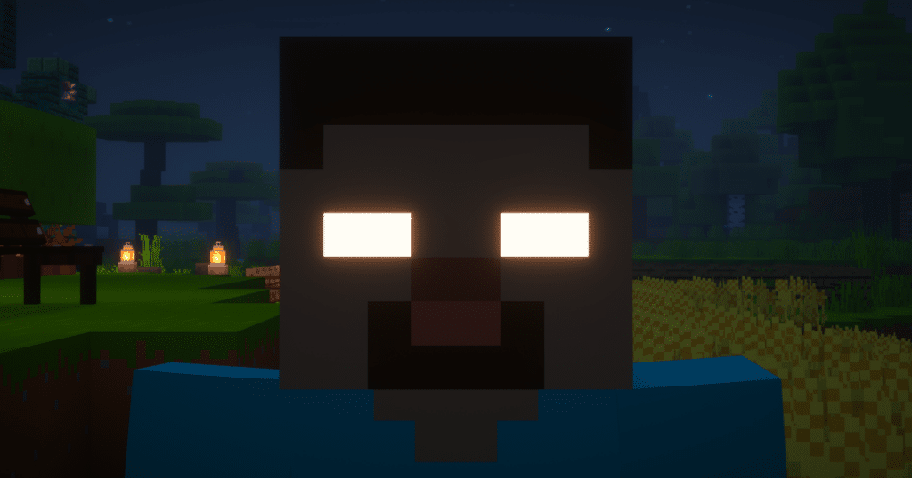
La manifestación espectral definitiva. Aparece sutilmente a lo lejos, manipula las antorchas y altera la estructura del mundo.
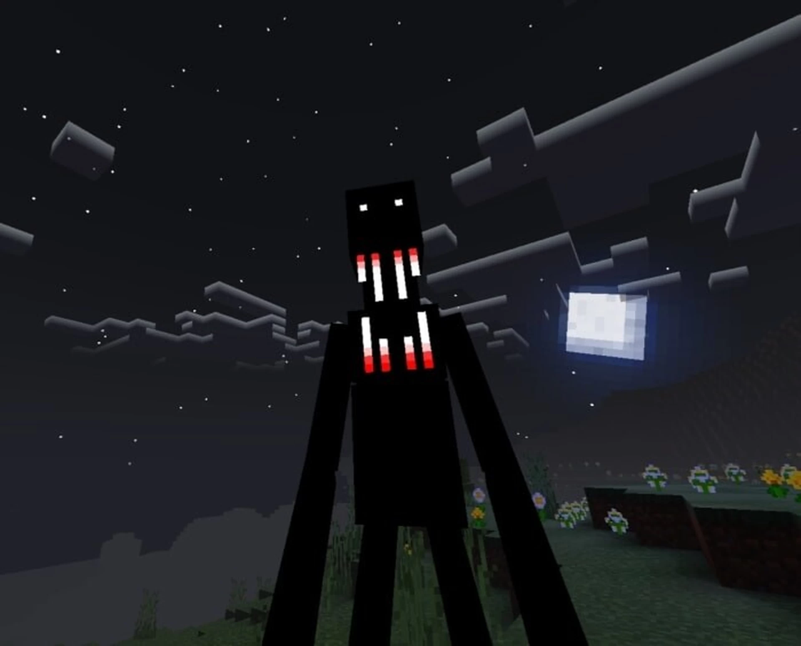
Entidad esbelta y tenebrosa que se manifiesta únicamente en medio de la niebla. Te vigila antes de iniciar una embestida letal.
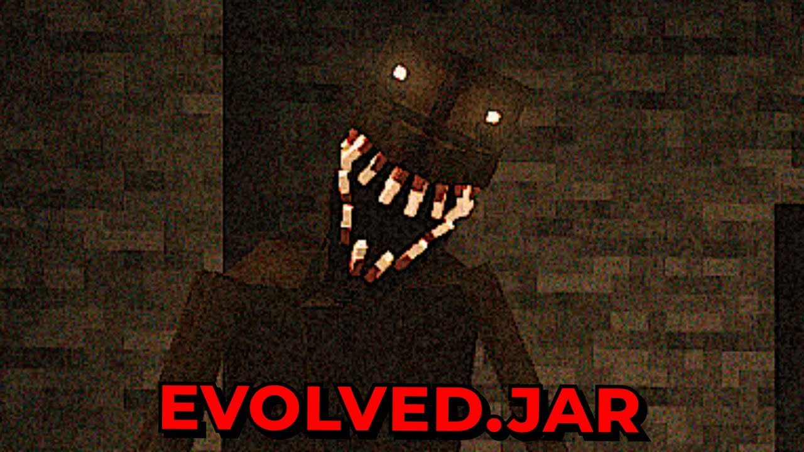
El cazador subterráneo por excelencia. Sus chillidos metálicos retumban en las cavernas antes de arrastrarse hacia ti a gran velocidad.
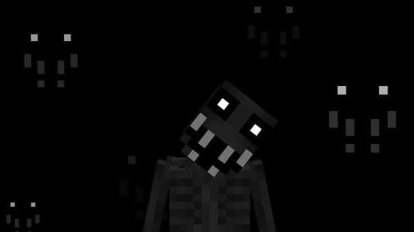
Una silueta sombría que se esconde tras los árboles y edificios. Te acecha durante días para estudiar tus rutinas antes de atacar.
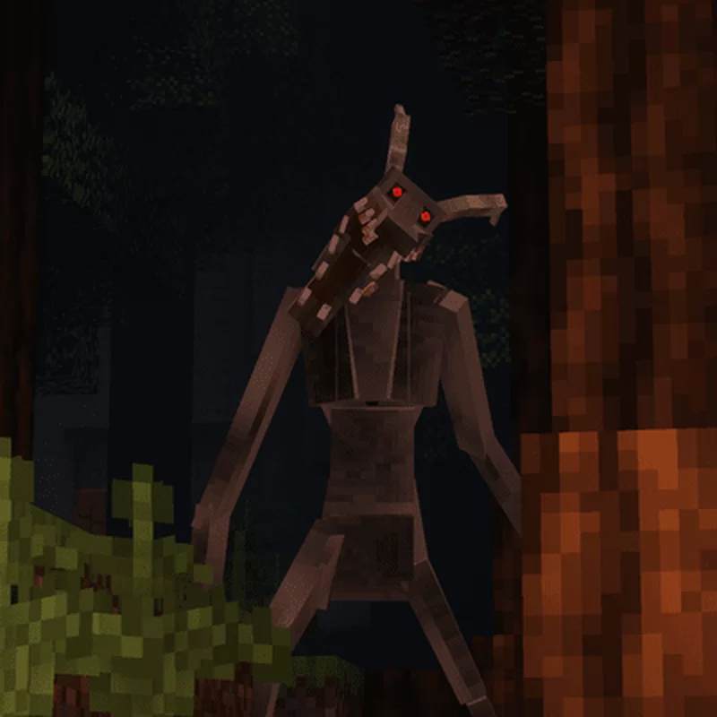
Criatura aborrecible que imita sonidos y pasos para atraer al jugador a zonas boscosas y oscuras.
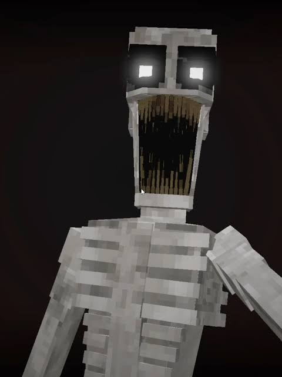
Bestia feroz dotada de garras enormes. Ataca sorpresivamente en espacios cerrados e interiores.
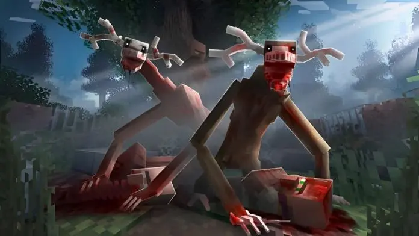
Capaz de camuflarse adquiriendo la forma de animales pacíficos o criaturas del entorno para engañarte.
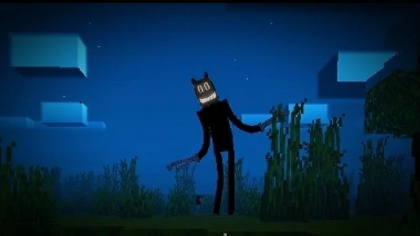
Una aberración visual con estética de dibujo distorsionado cuyos movimientos impredecibles desafían la lógica.
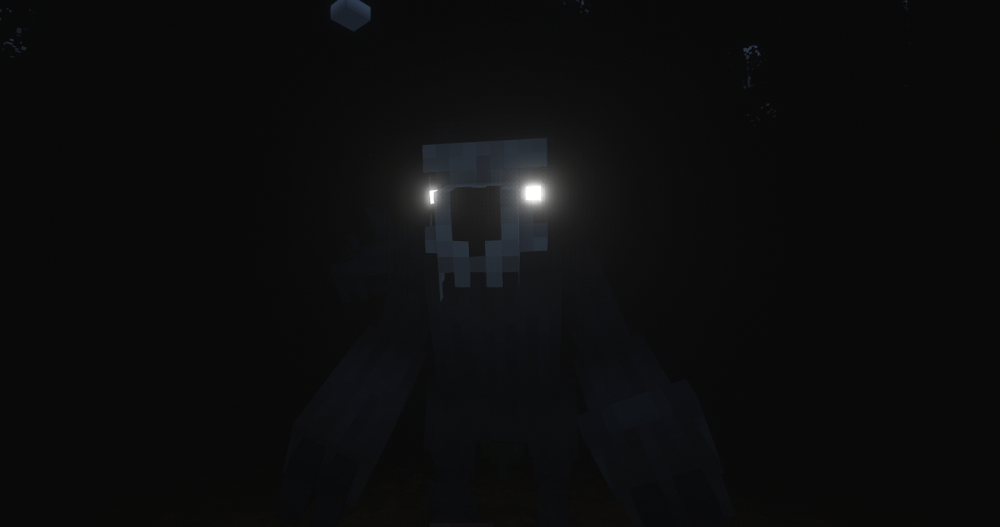
Un ejército de espectros, esqueletos corruptos y abominaciones nocturnas que elevan la dificultad global del juego.
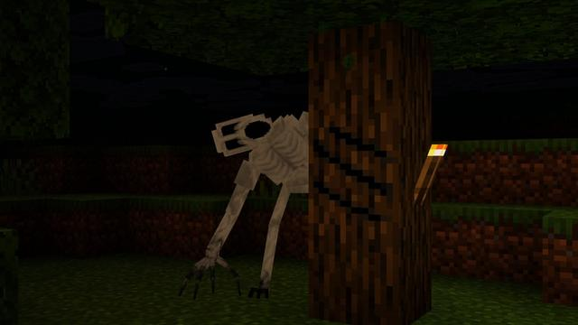
Presencia estática y perturbadora que te observa desde las alturas. Su proximidad altera el audio y causa paranoia.
Mira la diferencia visual entre el juego base y la experiencia atmosférica mejorada con los shaders recomendados para Horror K. Haz clic en las imágenes para verlas en grande.
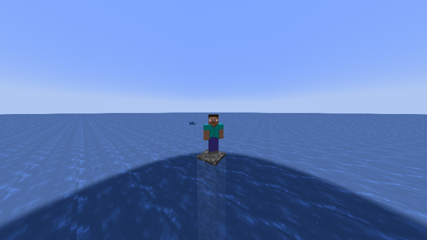
SIN SHADER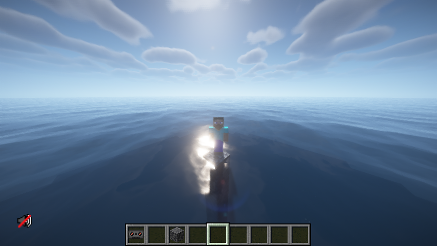
CON BSLProporciona una iluminación cálida, sombras suaves, agua realista y un tono niebla muy natural sin sacrificar demasiados fotogramas por segundo. Ideal para jugar de noche con buena visibilidad.
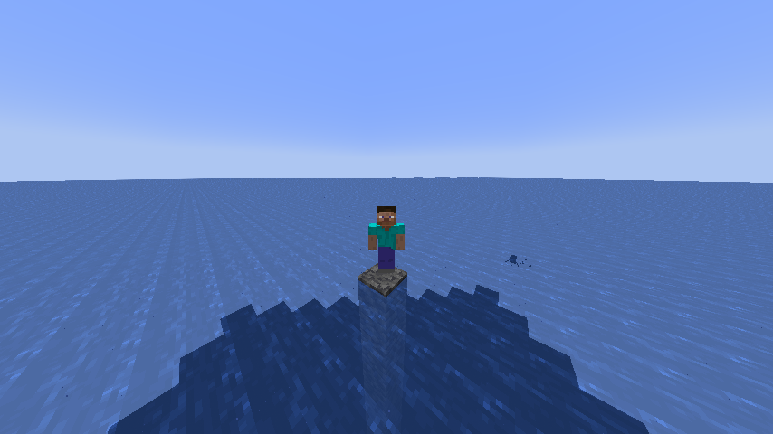
SIN SHADER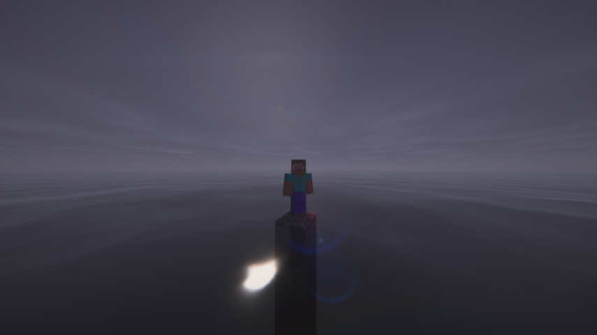
CON SANITYDiseñado específicamente para modpacks de terror. Aumenta el contraste, oscurece las sombras y añade efectos de viñeta y distorsión que incrementan la sensación de claustrofobia al explorar cuevas.
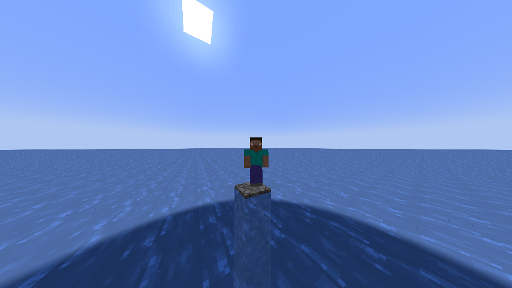
SIN SHADER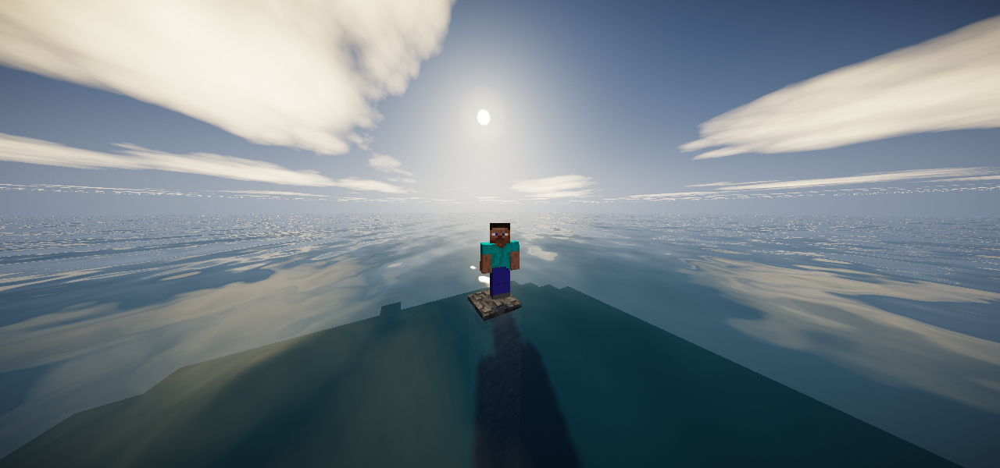
CON SKYGLEAMDestaca por sus cielos nocturnos detallados, nubes volumétricas y una iluminación tenue muy realista. Es la opción perfecta si buscas una estética tétrica pero ligera para la tarjeta gráfica.
Todos los mods integrados en la carpeta oficial de Horror K:
A pesar de contar con más de 70 mods activos y efectos visuales avanzados, Horror K está altamente optimizado gracias a la combinación de Embeddium, FerriteCore, Entity Culling e ImmediatelyFast.
Un reconocimiento inmenso a todos los desarrolladores y creadores de la comunidad de Minecraft Modding por desarrollar los proyectos que hicieron posible la experiencia de Horror K:
¿Cómo activo el Chat de Voz en multijugador?
Asegúrate de configurar tu micrófono en las opciones presionando la tecla V dentro del juego.
¿Puedo agregar Shaders al modpack?
¡Sí! El modpack incluye Oculus, por lo que puedes colocar tus Shaders favoritos directamente en la carpeta shaderpacks.
Horror K v1.0.0 se encuentra actualmente subido y en proceso de revisión oficial en CurseForge. Pronto estará disponible el botón de instalación en un solo clic.